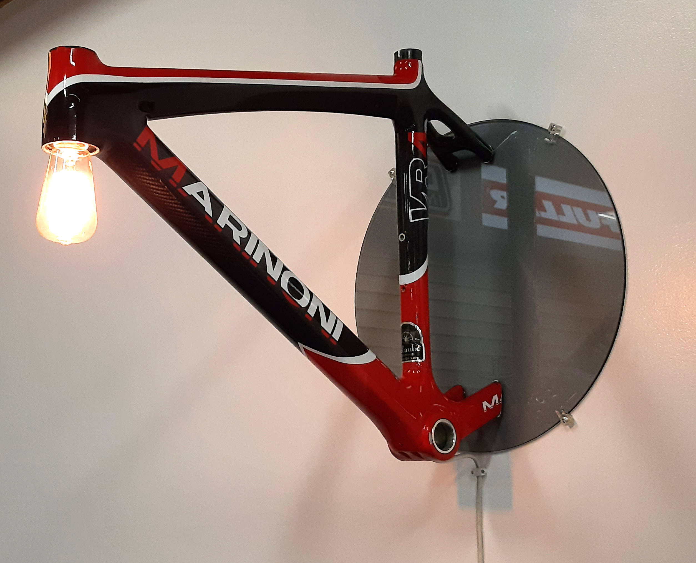
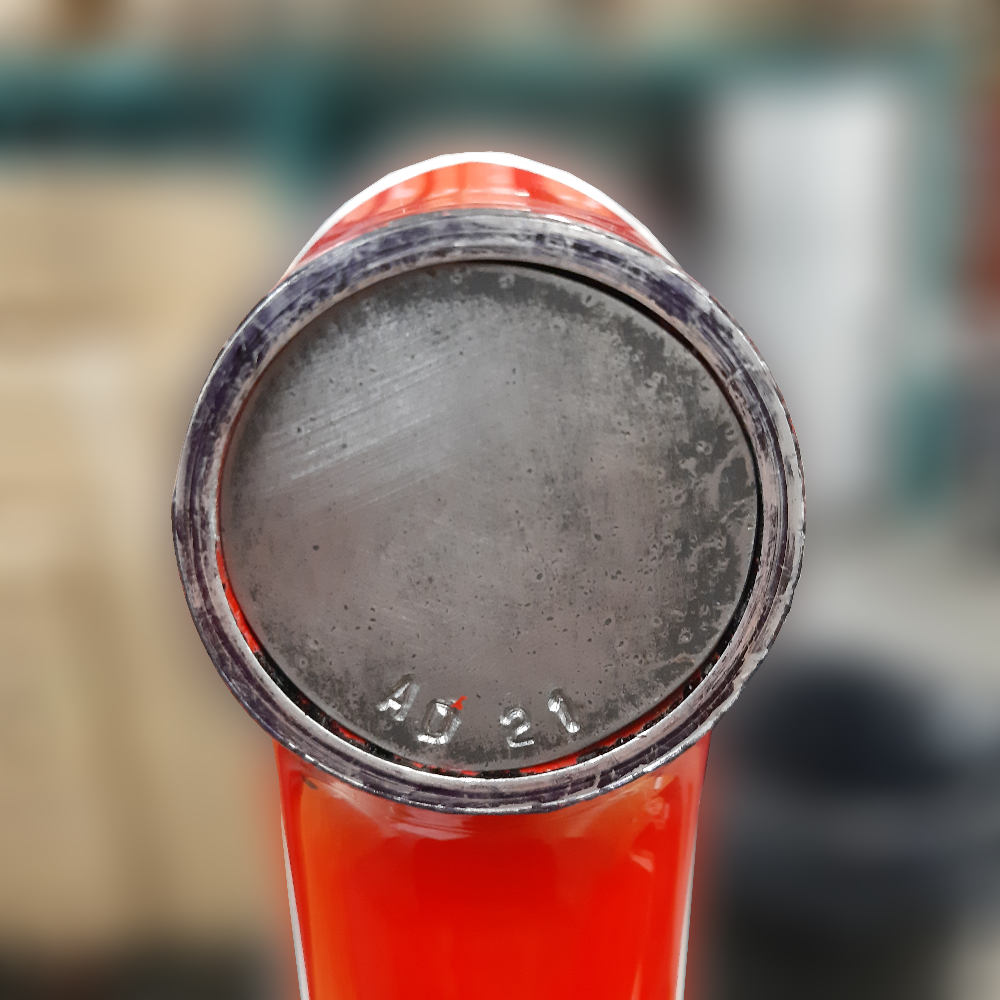

MARINONI

Marinoni is a wall light composed of a Marinoni frame in rugged carbon, and a round black glass plate.

Marinoni was created for bike lovers, who would like a decorative thematic touch in a garage or workshop.

Made by a bike lover for bike lovers.